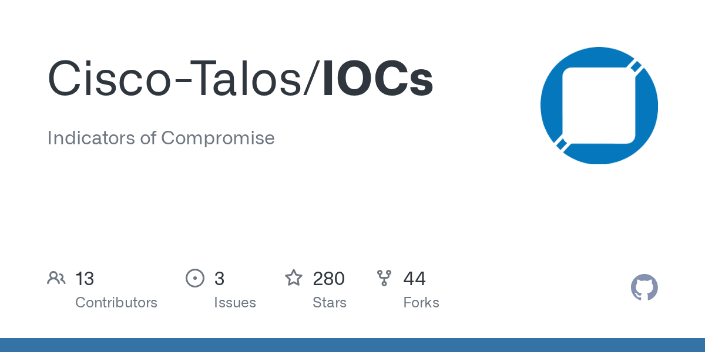

RSS
https://nitter.poast.org/0xToxin
https://nitter.poast.org/malware_traffic

https://status.alienvault.cloud/history.rss
https://news.sophos.com/en-us/feed/
https://blog.google/threat-analysis-group/rss/
https://cybersecuritynews.com/feed/
http://www.fireeye.com/blog/feed
https://www.mcafee.com/blogs/other-blogs/mcafee-labs/
https://www.secureworks.com/rss?feed=blog&category=threats-and-defenses
https://nakedsecurity.sophos.com/feed/
https://blog.morphisec.com/rss.xml
https://www.binarydefense.com/feed/
https://blog.prevailion.com/feeds/posts/default?alt=rss

https://research.splunk.com/feed.xml
https://services.nvd.nist.gov/rest/json/cves/2.0
https://www.elastic.co/security-labs/rss/topics/security-research.xml
https://www.elastic.co/security-labs/rss/categories/groups-and-tactics.xml
https://www.elastic.co/security-labs/rss/categories/campaigns.xml